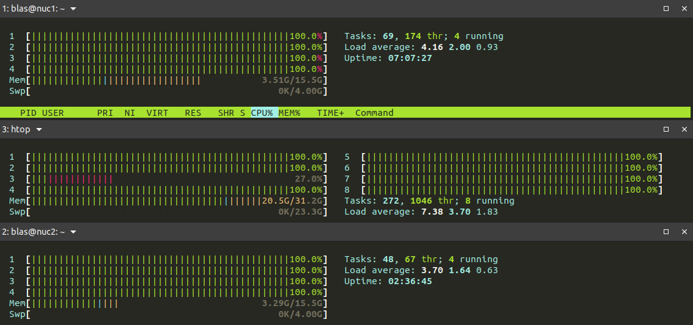

Setting up a home cluster
 Image credit: Blas M. Benito
Image credit: Blas M. Benito
In this post I explain how to setup a small Beowulf cluster with a personal PC running Ubuntu 20.04 and a couple of Intel NUCs running Ubuntu Server 20.04, with the end-goal of parallelizing R tasks.
The topics I cover here are:
- Required material
- Network setting
- Installing the secure shell protocol
- Installing Ubuntu server in the NUCs
- Installing R in the NUCs
- Managing the cluster’s network
Preamble
I have a little but nice HP ENVY model TE01-0008ns with 32 GB RAM, 8 CPUs, and 3TB of hard disk running Ubuntu 20.04 that I use to do all my computational work (and most of my tweeting). A few months ago I connected it with my two laptops (one of them deceased now, RIP my dear skynet) to create a little cluster to run parallel tasks in R.
It was just a draft cluster running on a wireless network, but it served me to think about getting a more permanent solution not requiring two additional laptops in my desk.
That’s were the nice INTEL NUCs (from Next Unit of Computing) come into play. NUCs are full-fledged computers fitted in small boxes usually sold without RAM memory sticks and no hard disk (hence the term barebone). Since they have a low energy consumption footprint, I thought these would be ideal units for my soon-to-be home cluster.
Material
I gifted myself with:
- 2 Intel Barebone BOXNUC6CAYH, each with 4 cores, and a maximum RAM memory of 32GB (you might read they only accept 8GB, but that’s not the case anymore). Notice that these NUCs aren’t state-of-the-art now, they were released by the end of 2016.
- 2 Hard disks SSD 2.5" Western Digital WDS250G2B0A WD Blue (250GB)
- 4 Crucial CT102464BF186D DDR3 SODIMM (204 pins) RAM sticks with 8GB each.
- 1 ethernet switch Netgear GS308-300PES with 8 ports.
- 3 ethernet wires NanoCable 10.20.0400-BL of cat 6 quality.
The whole set came to cost around 530€, but please notice that I had a clear goal in mind: “duplicating” my computing power with the minimum number of NUCs, while preserving a share of 4GB of RAM memory per CPU throughout the cluster (based on the features of my desk computer). A more basic setting with more modest NUCs and smaller RAM would cost half of that.
This instructive video by David Harry shows how to install the SSD and the RAM sticks in an Intel NUC. It really takes 5 minutes tops, one only has to be a bit careful with the RAM sticks, the pins need to go all the way in into their slots before securing the sticks in place.
Network settings
Before starting to install an operating system in the NUCS, the network setup goes as follows:
- My desktop PC is connected to a router via WIFI and dynamic IP (DHCP).
- The PC and each NUC are connected to the switch with cat6 ethernet wires.

To share my PC’s WIFI connection with the NUCs I have to prepare a new connection profile with the command line tool of Ubuntu’s
NetworkManager, named nmcli, as follows.
First, I need to find the name of my ethernet interface by checking the status of my network devices with the command line.
nmcli device status
DEVICE TYPE STATE CONNECTION
wlp3s0 wifi connected my_wifi
enp2s0 ethernet unavailable --
lo loopback unmanaged --
There I can see that my ethernet interface is named enp2s0.
Second, I have to configure the shared connection.
nmcli connection add type ethernet ifname enp2s0 ipv4.method shared con-name cluster
Were ifname enp2s0 is the name of the interface I want to use for the new connection, ipv4.method shared is the type of connection, and con-name cluster is the name I want the connection to have. This operation adds firewall rules to manage traffic within the cluster network, starts a DHCP server in the computer that serves IPs to the NUCS, and a DNS server that allows the NUCs to translate internet addresses.
After turning on the switch, I can check the connection status again with
nmcli device status
DEVICE TYPE STATE CONNECTION
enp2s0 ethernet connected cluster
wlp3s0 wifi connected my_wifi
lo loopback unmanaged --
When checking the IP of the device with bash ifconfig it should yield 10.42.0.1. Any other computer in the cluster network will have a dynamic IP in the range 10.42.0.1/24.
Further details about how to set a shared connection with NetworkManager can be found in
this nice post by Beniamino Galvani.
SSH setup
My PC, as the director of the cluster, needs an SSH client running, while the NUCs need an SSH server.
SSH (Secure Shell) is a remote authentication protocol that allows secure connections to remote servers that I will be using all the time to manage the cluster. To install, run, and check its status I just have to run these lines in the console:
sudo apt install ssh
sudo systemctl enable --now ssh
sudo systemctl status ssh
Now, a secure certificate of the identity of a given computer, named ssh-key, that grants access to remote ssh servers and services needs to be generated.
ssh-keygen "label"
Here, substitute “label” by the name of the computer to be used as cluster’s “director”. The system will ask for a file name and a passphrase that will be used to encrypt the ssh-key.
The ssh-key needs to be added to the
ssh-agent.
ssh-add ~/.ssh/id_rsa
To copy the ssh-key to my GitHub account, I have to copy the contents of the file ~/.ssh/id_rsa.pub (can be done just opening it with gedit ~/.ssh/id_rsa.pub + Ctrl + a + Ctrl + c), and paste it on GitHub account > Settings > SSH and GPG keys > New SSH Key (green button in the upper right part of the window).
Note: If you don’t use GitHub, you’ll need to copy your ssh-key to the NUCs once they are up and running with ssh-copy-id -i ~/.ssh/id_rsa.pub user_name@nuc_IP.
Installing and preparing ubuntu server in each NUC
The NUCs don’t need to waste resources in a user graphical interface I won’t be using whatsoever. Since they will work in a headless configuration once the cluster is ready, a Linux distro without graphical user interface such as Ubuntu server is the way to go.
Installing Ubuntu server
First it is important to connect a display, a keyboard, and a mouse to the NUC in preparation, and turn it on while pushing F2 to start the visual BIOS. These BIOS parameters need to be modified:
- Advanced (upper right) > Boot > Boot Configuration > UEFI Boot > OS Selection: Linux
- Advanced > Boot > Boot Configuration > UEFI Boot > OS Selection: mark “Boot USB Devices First”.
- [optional] Advanced > Power > Secondary Power Settings > After Power Failure: “Power On”. I have the switch and nucs connected to an outlet plug extender with an interrupter. When I switch it on, the NUCs (and the switch) boot automatically after this option is enabled, so I only need to push one button to power up the cluster.
- F10 to save, and shutdown.
To prepare the USB boot device with Ubuntu server 20.04 I first download the .iso from
here, by choosing “Option 3”, which leads to the manual install. Once the .iso file is downloaded, I use
Ubuntu’s Startup Disk Creator to prepare a bootable USB stick. Now I just have to plug the stick in the NUC and reboot it.
The Ubuntu server install is pretty straightforward, and only a few things need to be decided along the way:
- As user name I choose the same I have in my personal computer.
- As name for the NUCs I choose “nuc1” and “nuc2”, but any other option will work well.
- As password, for comfort I use the same I have in my personal computer.
- During the network setup, choose DHCP. If the network is properly configured and the switch is powered on, after a few seconds the NUC will acquire an IP in the range
10.42.0.1/24, as any other machine within theclusternetwork. - When asked, mark the option “Install in the whole disk”, unless you have other plans for your NUC.
- Mark “Install OpenSSH”.
- Provide it with your GitHub user name if you have your ssh-key there, and it will download it right away, facilitating a lot the ssh setup.
Reboot once the install is completed. Now I keep configuring the NUC’s operating system from my PC through ssh.
Configuring a NUC
First, to learn the IP of the NUC:
sudo arp-scan 10.42.0.1/24
Other alternatives to this command are arp -a and sudo arp-scan -I enp2s0 --localnet. Once I learn the IP of the NUC, I add it to the file etc/hosts of my personal computer as follows.
First I open the file as root.
sudo gedit /etc/hosts
Add a new line there: 10.42.0.XXX nuc1 and save the file.
Now I access the NUC trough ssh to keep preparing it without a keyboard and a display. I do it from Tilix, that allows to open different command line tabs in the same window, which is quite handy to manage several NUCs at once.

Another great option to manage the NUCs through ssh is terminator, that allows to
broadcast the same commands to several ssh sessions at once. I have been trying it, and it is much better for cluster management purposes than Tilix. Actually, using it would simplify this workflow a lot, because once Ubuntu server is installed on each NUC, the rest of the configuration commands can be broadcasted at once to both NUCs. It’s a bummer I discovered this possibility way too late!
ssh blas@10.42.0.XXX
The NUC’s operating system probably has a bunch of pending software updates. To install these:
sudo apt-get upgrade
Now I have to install a set of software packages that will facilitate managing the cluster’s network and the NUC itself.
sudo apt install net-tools arp-scan lm-sensors dirmngr gnupg apt-transport-https ca-certificates software-properties-common samba libopenmpi3 libopenmpi-dev openmpi-bin openmpi-common htop
Setting the system time
To set the system time of the NUC to the same you have in your computer, just repeat these steps in every computer in the cluster network.
#list time zones:
timedatectl list-timezones
#set time zone
sudo timedatectl set-timezone Europe/Madrid
#enable timesyncd
sudo timedatectl set-ntp on
Setting the locale
The operating systems of the NUCs and the PC need to have the same locale. It can be set by editing the file /etc/default/locale with either nano (in the NUCS) or gedit (in the PC) and adding these lines, just replacing en_US.UTF-8 with your preferred locale.
LANG=“en_US.UTF-8”
LANGUAGE=“en_US:en”
LC_NUMERIC=“en_US.UTF-8”
LC_TIME=“en_US.UTF-8”
LC_MONETARY=“en_US.UTF-8”
LC_PAPER=“en_US.UTF-8”
LC_IDENTIFICATION=“en_US.UTF-8”
LC_NAME=“en_US.UTF-8”
LC_ADDRESS=“en_US.UTF-8”
LC_TELEPHONE=“en_US.UTF-8”
LC_MEASUREMENT=“en_US.UTF-8”
Temperature monitoring
NUCs are
prone to overheating when under heavy loads for prolonged times. Therefore, monitoring the temperature of the NUCs CPUs is kinda important. In a step before I installed lm-sensors in the NUC, which provides the tools to do so. To setup the sensors from an ssh session in the NUC:
sudo sensors-detect
The program will request permission to find sensors in the NUC. I answered “yes” to every request. Once all sensors are identified, to check them
sensors
iwlwifi_1-virtual-0
Adapter: Virtual device
temp1: N/A
acpitz-acpi-0
Adapter: ACPI interface
temp1: +32.0°C (crit = +100.0°C)
coretemp-isa-0000
Adapter: ISA adapter
Package id 0: +30.0°C (high = +105.0°C, crit = +105.0°C)
Core 0: +30.0°C (high = +105.0°C, crit = +105.0°C)
Core 1: +30.0°C (high = +105.0°C, crit = +105.0°C)
Core 2: +29.0°C (high = +105.0°C, crit = +105.0°C)
Core 3: +30.0°C (high = +105.0°C, crit = +105.0°C)
which gives the cpu temperatures at the moment the command was executed. The command watch sensors gives continuous temperature readings instead.
To control overheating in my NUCs I removed their top lids, and installed them into a custom LEGO “rack” with external USB fans with velocity control, as shown in the picture at the beginning of the post.
Installing R
To install R in the NUCs I just proceed as I would when installing it in my personal computer. There is a thorough guide here.
In a step above I installed all the pre-required software packages. Now I only have to add the security key of the R repository, add the repository itself, update the information on the packages available in the new repository, and finally install R.
sudo apt-key adv --keyserver keyserver.ubuntu.com --recv-keys E298A3A825C0D65DFD57CBB651716619E084DAB9
sudo add-apt-repository 'deb https://cloud.r-project.org/bin/linux/ubuntu focal-cran40/'
sudo apt update
sudo apt install r-base
Note: If R has issues to recognize the system locale
nano ~/.profile
add the following lines, replacing en_US.UTF-8 with your preferred locale
export LANG=en_US.UTF-8
export LC_ALL=en_US.UTF-8
save, and execute the file to export the locale so R can read it.
. ~/.profile
Finalizing the network configuration
Each NUC needs firewall rules to grant access from other computers withinn the cluster network. To activate the NUC’s firewall and check what ports are open:
sudo ufw enable
sudo ufw status
To grant access from the PC to the NUC through ssh, and later through R for parallel computing, the ports 22 and 11000 must be open for the IP of the PC (10.42.0.1).
sudo ufw allow ssh
sudo ufw allow from 10.42.0.1 to any port 11000
sudo ufw allow from 10.42.0.1 to any port 22
Finally, the other members of the cluster network must be declared in the /etc/hosts file of each computer.
In each NUC edit the file through ssh with bash sudo nano /etc/hosts and add the lines
10.42.0.1 pc_name
10.42.0.XXX name_of_the_other_nuc
In the PC, add the lines
10.42.0.XXX name_of_one_nuc
10.42.0.XXX name_of_the_other_nuc
At this point, after rebooting every machine, the NUCs must be accessible through ssh by using their names (ssh username@nuc_name) instead of their IPs (ssh username@n10.42.0.XXX). Just take in mind that, since the cluster network works with dynamic IPs (and such setting cannot be changed in a shared connection), the IPs of the NUCs might change if a new device is added to the network. That’s something you need to check from the PC with sudo arp-scan 10.42.0.1/24, to update every /etc/hosts file accordingly.
I think that’s all folks. Good luck setting your home cluster! Next time I will describe how to use it for parallel computing in R.